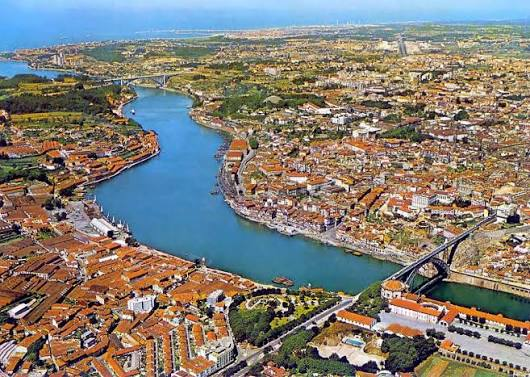

Bem-vindo ao Porto!
O Porto é uma cidade portuguesa conhecida pela sua história, arquitetura e gastronomia.

O que podes descobrir?
- Monumentos históricos
- Gastronomia tradicional
- Paisagens sobre o rio Douro
Última atualização:
O teu guia turístico da cidade Invicta.
O Porto é uma cidade portuguesa conhecida pela sua história, arquitetura e gastronomia.

Última atualização: